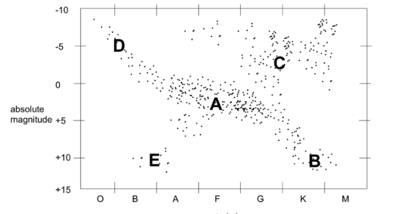
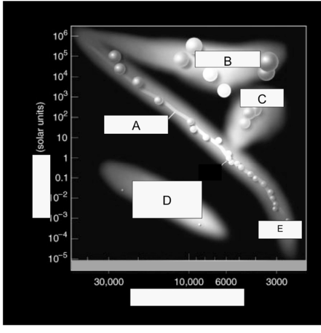
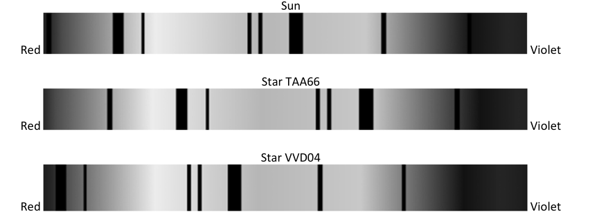

Part A: Multiple choice (10 marks)
For an observer in the Northern Hemisphere (e.g. Greenland), which of the following best describes the motion of the Sun and the planets across the sky?
Convert 1 light-day, the distance light travels in a day, into km:
3 × 105 km/s × 3600 s/h × 24 h = 2.6 × 1010 km.
Which of the following best describes the shape of the Solar System?
What would be the effect on the light from a star that is moving towards the Earth?
Edwin Hubble's observations of receding galaxies gave support to which theory of the origin of the universe?
What is the order of the final stages for a star with a mass of 10 times that of our Sun?
If iron is the heaviest element that will come from our Sun, where are heavier elements created?
At the death of a large star, electrons crowd into the nuclei in the core of the star, creating a neutron star. What is the most dramatic property of a neutron star?
Questions 9 and 10 refer to the following HR diagram.

Which two groups of the labelled stars represent stars at the end of the stellar life cycle?
C are red giants and E are white dwarfs: both are late stages in a star's life.
Which of the stars best matches the current status of our Sun?
The Sun is a main sequence star, spectral class G, absolute magnitude about +5.
Part B: Short answer (25 marks)
Question 1 (7 marks)
Sirius is the brightest star in the sky and is located in the Canis Major (Big Dog) constellation. Observations on Earth determine that the parallax angle of Sirius is 0.3788 arcseconds.
What is the distance between the Earth and Sirius in parsecs?
d = 1 / p = 1 ÷ 0.3788 = 2.64 pc.
Convert the distance between the Earth and Sirius from parsecs into light-years.
1 pc = 3.26 light-years, so 2.64 × 3.26 = 8.61 light-years.
The constellation Canis Major has 6 very bright stars, plus a number of others. The next four brightest stars after Sirius are listed alphabetically below, with their magnitudes:
| Name | Apparent magnitude | Absolute magnitude |
|---|---|---|
| Adhara | 1.50 | −4.10 |
| Aludra | 2.45 | −7.51 |
| Mirzam | 1.98 | −3.95 |
| Wezen | 1.83 | −6.87 |
- Which of these stars is the brightest when observed from Earth?
- Which is the brightest star when they are all placed at the same "standard" distance from Earth?
- What is the "standard" distance for determining the brightness of stars?
- Which of these stars is the furthest away from Earth?
Smaller (more negative) magnitudes mean brighter. Adhara has the smallest apparent magnitude, and Aludra the smallest absolute magnitude. Aludra is the faintest in our sky but the most luminous, so it must be the furthest away.
Question 2 (8 marks)
Alexis and Ryan are in an astronomy classroom. They saw an HR diagram on the wall, and noticed that some information was missing.

On the floor, they found a pile of cards with these words: red supergiants, red giants, red dwarfs, absolute magnitude, temperature, luminosity, spectral class, main sequence, white dwarfs.
Write the correct labels for the HR diagram axes.
Y-axis (marked 10-5 to 106 solar units):
X-axis (marked 30 000 to 3000):
Write the correct word for the stars labelled:
C:
E:
E is also accepted as "main sequence", since red dwarfs are the small, cool end of the main sequence.
Alexis and Ryan read a statement on the diagram: "All stars are 'born' on the main sequence."
Explain how the brightness and temperature of a star relate to its size and formation on the main sequence.
Brightness and temperature increase with the size of the star formed on the main sequence (1 mark). Size depends on the amount of hydrogen available at formation (1 mark).
Stars in the group labelled C are much cooler than our Sun. However, they are also much brighter than our Sun. Explain why this is the case, and refer to a star's life cycle.
They are brighter because they are much larger in diameter (size) (1 mark). They grow in size when they move from the main sequence to the red giant stage (1 mark).
Question 3 (4 marks)
Alisson is an astronomy student who is observing the visible light spectra of stars. The diagram below shows the spectra of the Sun and two other stars. The red end of the spectrum is on the left and the violet end is on the right.

It has been said that the light spectrum of a star can reveal which elements are present in it. Explain how.
The spectral (dark absorption) lines in starlight match the spectral lines of elements measured on Earth (1 mark). So those elements must be present in the star to produce the same lines (1 mark).
Of the two other stars, TAA66 and VVD04, which one is moving towards the Earth? Describe how you can tell from the light spectrum.
TAA66 (1 mark). Its spectral lines are shifted towards the violet end compared with the Sun's: its light is blue shifted (1 mark).
No mark for TAA66 without a reasonable attempt to explain.
Question 4 (6 marks)
Modern astronomers have described the evolution of a star similar in size to our Sun.
A. A dense cloud of dust and gas starts to collapse under its own gravity.
B. The central hydrogen runs out; the core collapses and heats up. The star expands and cools and becomes a red giant.
C. The collapsed core survives as a hot white dwarf.
D. For billions of years, the star shines by converting hydrogen into helium in its core.
E. The core cools very slowly to become a cold, black globe.
F. The star gently ejects its outer atmosphere as a planetary nebula, revealing its collapsed core.
G. Individual clumps continue to collapse, growing hotter and hotter. When a clump's temperature reaches 15 million degrees, nuclear fusion reactions start.
Place the statements in the correct sequence, from the early stages to "star death".
| Stage 1 | Stage 2 | Stage 3 | Stage 4 | Stage 5 | Stage 6 | Stage 7 |
|---|---|---|---|---|---|---|
A → G → D → B → F → C → E. Full marks if all are correct; otherwise 1 mark for every 3 in the correct sequence.
Carl Sagan said, "We are all made of star stuff." Explain how this quote relates to stellar evolution and death.
Earth contains elements that can only be formed in a supernova (1 mark). This means that the Solar System is made from the remnants of a star (1 mark).